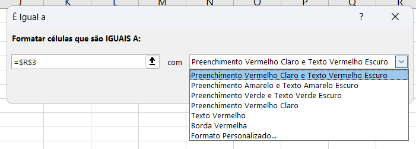
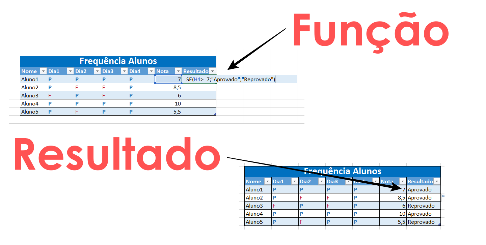
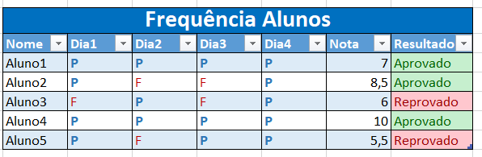

Aula 06: Formatação Condicional e a Função SE
Duas planilhas podem ter os mesmos números e ainda contar histórias completamente diferentes. Com a formatação condicional, o Excel destaca informações automaticamente; com a função SE, ele toma decisões.

Formatação condicional: quando a cor vira informação

A Formatação Condicional permite que o Excel altere a aparência de uma célula com base no valor que ela contém. Em vez de olhar número por número, a própria planilha chama atenção para o que merece destaque.
Para aplicar, selecione o intervalo desejado e acesse Página Inicial → Formatação Condicional.
Curiosidade: Esse recurso nasceu com o Excel 97, mas só ganhou as escalas de cor, barras e ícones modernos a partir do Excel 2007.
As três famílias de regras mais usadas
O Excel organiza a formatação condicional em grupos bem práticos:
- Realçar Regras das Células: destaca valores maiores que, menores que, entre, duplicados ou que contenham um texto específico;
- Regras de Primeiros/Últimos: destaca os 10 primeiros valores, os 10% últimos, valores acima da média, entre outros;
- Barras de Dados, Escalas de Cor e Conjuntos de Ícones: transformam os números em pequenos gráficos visuais.
Dica: Barras de dados são muito úteis em planilhas de notas ou vendas, porque ajudam a comparar valores rapidamente sem precisar de um gráfico separado.
Criando uma regra personalizada com fórmula
Além das opções prontas, é possível criar uma regra baseada em uma fórmula própria, na opção Nova Regra → Usar uma fórmula para determinar quais células devem ser formatadas. Isso permite condições muito mais específicas.
Curiosidade: Quando a regra é criada com fórmula, o Excel avalia a condição como um teste lógico que retorna VERDADEIRO ou FALSO — o mesmo raciocínio usado pela função SE.
Dentre os testes lógicos que retornam VERDADEIRO ou FALSO, alguns exemplos comuns são:
=B2=6— verifica se o valor em B2 é igual a 6;=B2<6— verifica se o valor em B2 é menor que 6;=B2>6— verifica se o valor em B2 é maior que 6;=B2>=6— verifica se o valor em B2 é maior ou igual a 6;=B2<>"Texto"— verifica se o valor em B2 é diferente de "Texto";=E(B2>=6; C2="Sim")— verifica se B2 é maior ou igual a 6 E C2 é igual a "Sim".

Se a formatação condicional muda a aparência, a função SE muda o resultado que aparece na célula, dependendo de uma condição. A estrutura básica é:
=SE(teste_lógico; valor_se_verdadeiro; valor_se_falso)Por exemplo, para indicar se um aluno foi aprovado com base na média da célula B2, a fórmula seria:
=SE(B2>=6; "Aprovado"; "Reprovado")O Excel avalia se B2 é maior ou igual a 6. Se for verdadeiro, escreve “Aprovado”; se for falso, escreve “Reprovado”.
Dica: Textos usados como resultado precisam ficar entre aspas. Números e outras fórmulas entram sem aspas.
Combinando várias condições
Quando uma condição não é suficiente, há duas estratégias comuns:
- SE aninhado: usar um SE dentro do outro para criar mais de dois resultados;
- Funções E() e OU(): usadas no teste lógico para exigir que várias condições sejam verdadeiras ou que pelo menos uma seja.
=SE(B2>=8; "Ótimo"; SE(B2>=6; "Bom"; "Precisa melhorar"))Formatação condicional e função SE trabalhando juntas
As duas ferramentas se completam muito bem em uma planilha real. Um uso comum é usar a função SE em uma coluna auxiliar para classificar cada linha, por exemplo, em “Aprovado” ou “Reprovado”, e depois aplicar uma Formatação Condicional baseada em texto para colorir automaticamente a célula.
Dica: Use a regra Realçar Regras das Células → Texto que Contém para destacar automaticamente os resultados gerados pela função SE.
Exemplo prático de uso combinado

Imagine uma planilha de controle de notas com colunas de aluno, nota final e situação. O caminho seria:
- Na coluna Situação, usar
=SE(NotaFinal>=6; "Aprovado"; "Reprovado")para gerar o resultado automaticamente; - Selecionar a coluna situação e aplicar Formatação Condicional do tipo Texto que Contém, com verde para “Aprovado” e vermelho para “Reprovado”;
- Opcionalmente, aplicar uma Escala de Cor na coluna Nota Final para visualizar a distância em relação à média.
Em poucos passos, a planilha deixa de apenas armazenar dados e passa a interpretá-los e sinalizá-los sozinha.